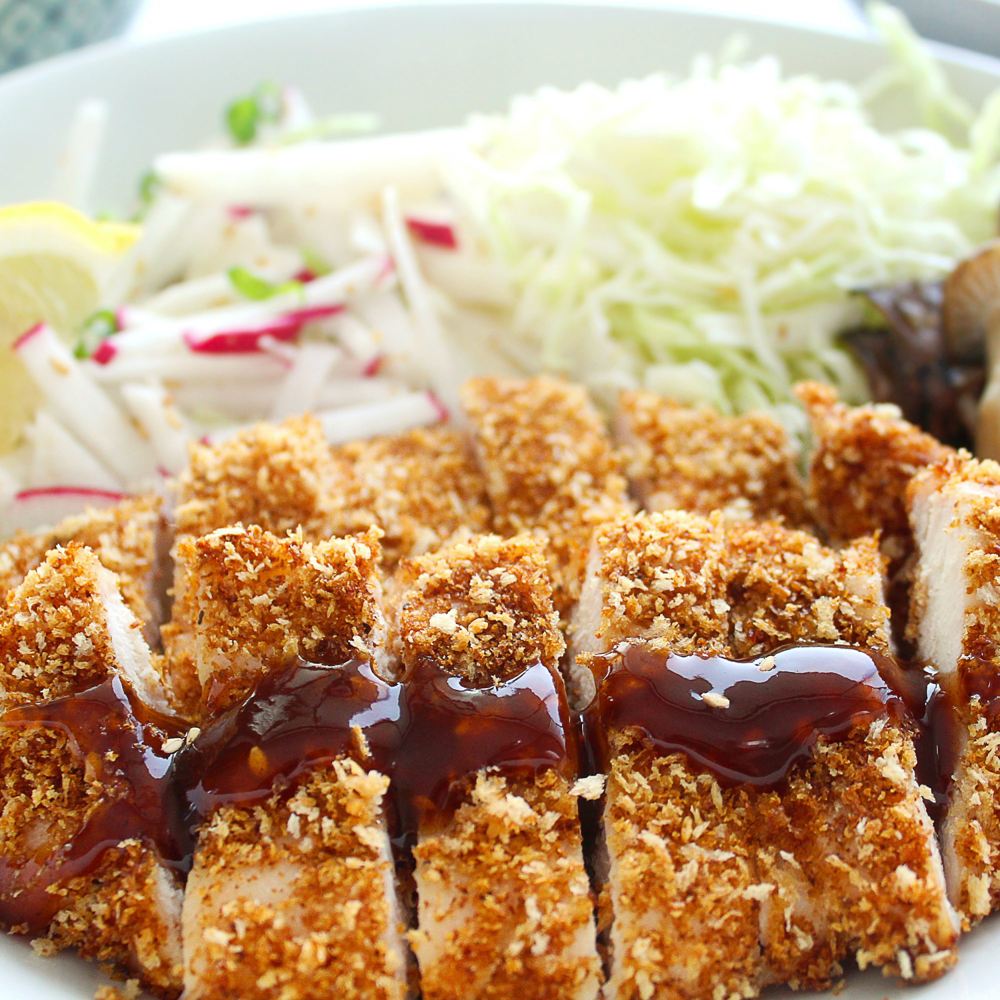

Chicken Katsu Recipe

Description
Katsu is a breaded Japanese dish that can be made with chicken, or pork. This recipe calls for chicken katsu.
Tonkatsu originated in Japan during the Meiji era in the 19th century, a dish derived from European Style breaded and fried meat cutlets. It is a type of yoshoku, or Japanese versions of European cuisine.
Ingredients
- 4 skinless, boneless chicken breast halves - pounded to 1/2 inch thickness
- Salt and Pepper to taste
- 2 tablespoons all-purpose flour
- 1 egg, beaten
- 1 cup oil for frying, or as needed
Steps
- Season the chicken breasts on both sides with salt and pepper. Place the flour, egg and panko crumbs into separate shallow dishes. Coat the chicken breasts in flour, shaking off any excess. Dip them into the egg, and then press into the panko crumbs until well coated on both sides.
- Heat 1/4 inch of oil in a large skillet over medium-high heat. Place chicken in the hot oil, and cook 3 or 4 minutes per side, or until golden brown.